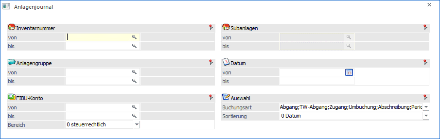
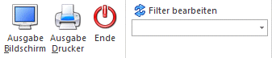
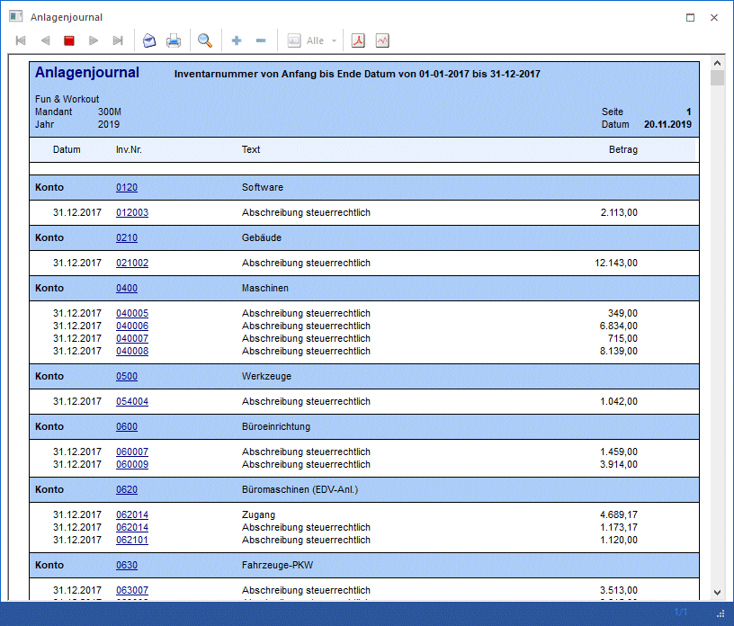

Im Menüpunkt
1 Auswertungen
1 Journal
kann eine Liste aller Aktionen in der Anlagenbuchhaltung ausgegeben werden.

Dabei können folgende Auswahlen vorgenommen werden:
Ø Inventarnummer
Über die von / bis – Eingabe können die Anlagegüter eingeschränkt werden, für die die Auswertung durchgeführt werden soll.
Ø Subanlagen
Ist die Ausgabe des Journals auf eine einzige Inventarnummer eingeschränkt, für welche Subanlagen existieren, kann hier zusätzlich auf die Subanlagen eingeschränkt werden.
Ø Anlagengruppe
Über die von / bis – Eingabe kann die Auswertung auf Anlagengruppen eingeschränkt werden.
Ø FIBU-Konto
Über die von / bis – Eingabe kann die Auswertung auf FIBU-Konten eingeschränkt werden.
Ø Bereich
Hier kann entschieden werden, ob in dem Anlagenjournal die steuerrechtlichen oder handelsrechtlichen Werte ausgegeben werden sollen.
Automatisch vorgeschlagen wird das Abschreibungsverfahren, welches im ANBU-Parameter / Buchen für die Buchungsübergabe definiert ist.
Ø Datum
Einschränkung des Zeitraumes, der ausgewertet werden soll.
Ø Buchungsart
Aus der Auswahllistbox kann gewählt werden, welche Buchungsarten aufgelistet werden sollen. Hierfür stehen zur Verfügung:
ü Abgang
Es werden alle
Bewegungen angezeigt, die durch einen Abgang erzeugt wurden.
ü TW-Abgang
Es werden alle
Teilwert-Abgänge angezeigt.
ü Zugang
Es werden alle
Anlagenzugänge angezeigt.
ü Umbuchung
Es werden alle
Umbuchungen angezeigt.
ü Abschreibung
Es wird angezeigt,
wann eine Abschreibung durchgeführt und eine Abschreibung storniert wurde.
ü Periodenabschreibung
Es wird
angezeigt, wann eine Periodenabschreibung durchgeführt und eine
Periodenabschreibung durch den Abschreibungs-Storno storniert wurde.
ü Per.Abschreibung vor
Initialisierung
Es werden die Periodenabschreibungszeilen angezeigt, die über
die Initialisierung unter WinLine Start / Parameter / Allgemeine Einstellungen /
Initialisieren Perioden AfA "letzte Buchung" initialisiert wurden.
Ø Sortierung
Als Sortierungskriterium steht im Anlagenjournal folgende Auswahl zur Verfügung:
ü 0 Datum
ü 1 Inventarnummer
ü 2 Gruppen
ü 3 FIBU-Konto
Buttons

Ø Ausgabe Bildschirm
Standardmäßig wird die Ausgabe auf dem Bildschirm vorgeschlagen, die auch durch Drücken der F5-Taste gestartet werden kann.
Ø Ausgabe Drucker
Die Vorschau wird am Drucker ausgegeben.
Ø Ende
Das Fenster wird geschlossen, ohne dass ein Journal angezeigt wird.
Ø Filter bearbeiten
Wird der Filter-Button angeklickt, kann ein neuer Filter definiert oder ein bestehender Filter gewählt werden. Dort kann eingestellt werden, nach welchen frei definierbaren Kriterien die Selektion durchgeführt werden soll (Details entnehmen Sie dem Kapitel Filter - Assistent).
Wurden in diesem Fenster bereits Filter angelegt, kann aus der Auswahllistbox ein bestehender Filter gewählt werden. Es werden immer nur die Filter angezeigt, die für das gerade aktive Fenster angelegt wurden.
Hinweis 1
Die Informationen der verwendeten Konten und Kosteninformationen werden erst mit der Version 8.5 (1207) geschrieben. D.h. wurden Bewegungen mit einer früheren Version erzeugt, können die Einschränkungen auf diese Zeilen nicht wirken (da die Infos noch nicht vorhanden sind).
Hinweis 2
Das Anlagenjournal wird jahresübergreifend geführt; sobald eine Jahresabschreibung durchgeführt wird, werden sämtliche Journalzeilen ans Folgejahr übergeben.
Achtung
Die Journalzeilen werden erst zum Zeitpunkt der Jahresabschreibung ins Journal übernommen. Soll ein Journal vor der Jahresabschreibung ausgegeben werden, muss dafür das Historienjournal verwendet werden.
Als Datum wird das Datum der Abschreibung eingetragen, deshalb wird z.B. bei einem Zugang innerhalb des Jahres das Jahresende im Anlagenjournal ausgewiesen. Um das tatsächliche Zugangsdatum zu sehen, muss auch hierfür das Historienjournal herangezogen werden.
